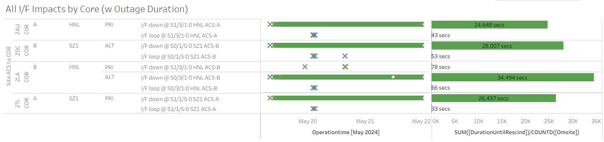
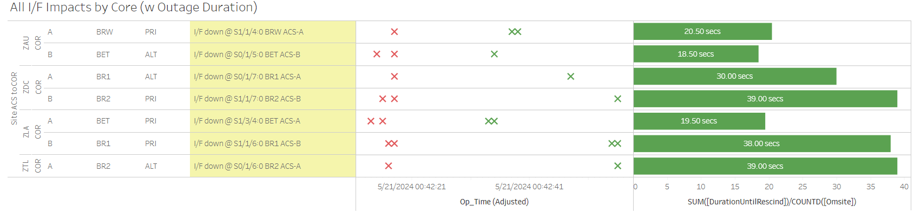
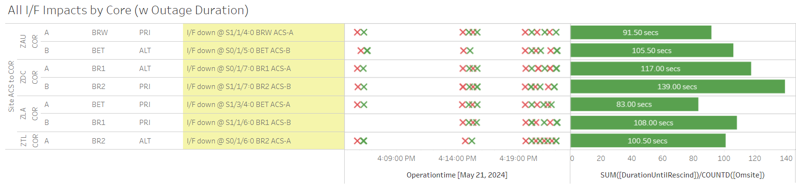
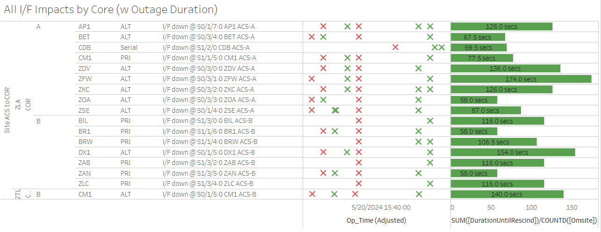

Weekly Highlights 20240515-20240522
SSM-WAAS-066 - CY24 Comm Upgrade
WAAS Engineering has released SSM-WAAS-066, and we are coordinating Cutover Start began the week of 4/8/2024 and completed 5/14/2024.
Cutover Complete -- 2 Week Monitoring Period ends 5/29
Several of the new circuits have ongoing issues:
- OTZ - Following circuits not delivered / SA'd
- Ring 1 PRI to ZAU - FTIH-WS-053504
- Ring 2 PRI to ZLA - FTIH-WS-053508
- Ring 2 ALT to ZLA - FTIH-WS-053509
- BRW - Ring 2 ALT to ZLA - FTIH-WS-053531
- Troubleshooting ongoing...
5/15 - AP1 CV-GUS Comm Fail SEs
- 5/15 14:35 - All C&Vs received flapping SE 738 CV-GUS Comm Failed to AP1 GUS (currently in Primary Mode), not apparently associated with any I/F downs; last event cleared at 5/15 18:20 (~838 seconds total)
5/15 - ZAU Comm Node 1 Power Cycled
- 5/15 15:33 - ZAU Comm Node 1 PCU-D manually powered OFF/ON to troubleshoot SNMP down to ZAU COR-B after upgrade; issue cleared at 5/15 15:34
5/15 - All Mexico Ring 1 Restored (except MTP)
- 5/15 18:16 - All Ring 1 Mexico comms down hard; all Mexico OFFLINE; ref LIR 798370024; all lines except MTP Ring 1 cleared at 5/16 01:07 (~128679 seconds for MPR/MMX/MSD; ~450104 seconds for MMD)
5/16 - AP1 GUS to Backup
- 5/16 07:05 - GUS Switchover - G30
- BR2 to Primary / AP1 to Backup in preparation
for
MR-184749; ref LIR 789867924
5/19 - SZ1 / HNL Comm Hits
- 5/19 08:02 - SZ1 Ring 1 PRI / Ring 2 ALT + HNL
Ring 1 PRI / Ring 2 ALT comms started flapping
ISR 0519-0764; ref LAD 801816524; loopback testing at 5/20 02:16 and 5/20 03:02; down hard at 5/21 23:29...

5/21 - BET / BRW / BR1 / BR2 Comm Hits
- 5/21 00:42 - ~20-40 second Comm hits for BET, BRW, BR1, and BR2 as shown below

- 5/21 16:05 - Comms flapping for BET, BRW, BR1, and BR2 as shown below

5/21 - ZTL C&V Fault (PCU-B Main Breaker Reset)
- 5/21 17:57 - ZTL C&V Faulted after SE 2 Main circuit breaker reset at 17:56; ref LCM 802938124 Warm Start and restarted at 5/21 18:36; restored to Normal at 5/21 19:51
5/21 - OTZ WRS Temperature Spike
- 5/21 00:59 - OTZ WRS experienced temperature spike (SE 309 Processor Power/Fan Failure on all WREs)
- 5/21 15:07 - OTZ WRS protective shutdown to address temperatures; ref LAD 802797324
- 5/22 16:06 - OTZ WRE-B and WRE-C returned to Maintenance and restored to Normal at 5/22 16:40; OTZ WRE-A needs manual control power due to Ring 2 down
- 5/22 19:18 - OTZ WRE-A manually power cycled, returned to Maintenance, and restored to Normal at 5/22 19:47
5/22 - BR1 GUS to Backup
- 5/22 04:09 - GUS Switchover - S15
- CM1 GUS to Primary / BR1 GUS to Backup
for telco Maint MR-187602; ref LAD 803254424
Various Comm Impacts
* Does not include single-line impacts <60 seconds which do not cause an outage
Other Sites
- 5/16 10:38 - CM1 Ring 1 ALT / Ring 2 PRI + YFB Ring 2 comms down hard; lines cleared at 5/16 10:56 (~5460 seconds)
- 5/18 06:06 - YWG Ring 1 ALT / Ring 2 PRI + ZNY Ring 1 ALT comms took ~40 second hits
- 5/20 00:21 - CDB Ring 2 comms down hard; line cleared at 5/20 00:46 (~1514 seconds)
- 5/20 14:34 - MMX Ring 2 interface comes back up (~1 million seconds -- down since 5/8); still no RG1 packets coming through...
- 5/20 15:38 - Both ZLA Cores experienced comm hits for multiple T1 sites; all lines cleared by 5/20 15:41 (~174 seconds max)

- 5/20 16:23 - MMX Ring 2 comms down for troubleshooting; line cleared at 5/20 17:22 (~2339 seconds)
- 5/21 21:21 - CDB Ring 1 comms down hard then flapping; last event cleared at 5/21 22:22 (~1564 seconds)
- 5/22 20:25 - CDB Ring 1 comms flapping...
- 5/22 08:56 - BR1 Ring 1 ALT / Ring 2 PRI and BR2 Ring 1 ALT / Ring 2 PRI comms down hard; all lines cleared at 5/22 09:03 (~420 seconds)
- 5/22 18:46 - BIL Ring 1 PRI / Ring 2 ALT comms down hard; loopback tested and lines cleared at 5/22 19:31 (~2697 seconds)
- 5/22 20:25 - CDB Ring 1 comms flapping...
List of current offline WREs
List of current offline WREs -- ref WAAS Status Monitor
All Depot shipments to Mexico are halted until the customs process can be finalized
- MMX WRE-C - 5/15-... - Processor failed and could not be restored
- MPR WRE-B - 5/3-... - Inits failing -- looks like a bad freq std; due to shipping issues, there is no spare Freq Std and no ETA to recover WRE-B...
- MTP WRE-B - 7/21/23-... - MTP WRE-B repaired during site visit 5/10/24, but no comm to the site to verify WRE to Normal...
5/11/23-... - MX Ring 2 Satcom Upgrade
MX WAAS Sites comm upgrades in progress:
- 2/15 - MMX Ring 2 successfully connected through Tijuana to ZLA COR-B!
- 11/2 - FTI has initiated coordination with Tijuana to install and test direct connection to Frequentis -- MMD Test on 12/6
- 10/27 - Frequentis has delivered to Tijuana, needs to be connected to FTI delivery
Further work / new cables needed at each WRS site to complete Ring 2 connection upgrades
FTI-Harris coordinating with SENEAM at TJX to complete end-to-end testing

Major Events


Comm Events